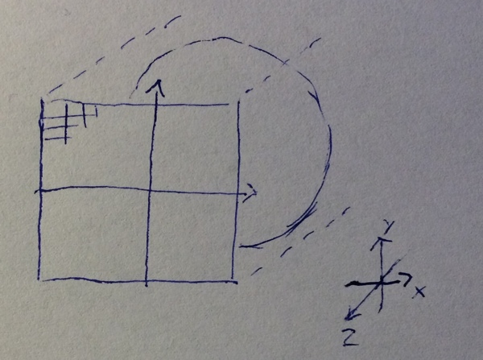

Most of the concepts introduced are also valid in 3D. One significant difference is that in 3D we are interested in finding the surface of objects rather than their interior.
 The first thing we do is defining the camera's view into the world. To keep it as simple as possible we set our camera in (0,0,0) and make it orthographic projection (meaning without perspective) from (-1,-1) to (1,1). Note that we don't use a near and a far plane as you might are familiar with from other types of 3D graphics. For each pixel we have a viewing direction, which for our simple example is (0,0,-1), since the camera is looking down the negative z-axis. We start with rendering a simple sphere.
The render algorithm is simple. The every pixel find the starting point p in world space.
- loop 100 iterations
- Find distance d from the point p to model
- Move p the distance d along the view direction
- If distance d is less that some threshold then assume we have hit the geometry
You might think it is slightly strange that I don't test for minimum threshold inside the loop. In some cases that might be a good idea, however GPUs execute a single instruction for multiple threads, which means that all threads in a thread group must have a distance less than the threshold before we can break out of the loop. If you are in doubt of what to do, I advice to to benchmark both possibilities and stick with the fastest or most simple option.
Now that do look much more like a 2D circle than a 3D sphere. Before we move on, let's convince us of we are working with 3D by using the depth to visualize the scene.